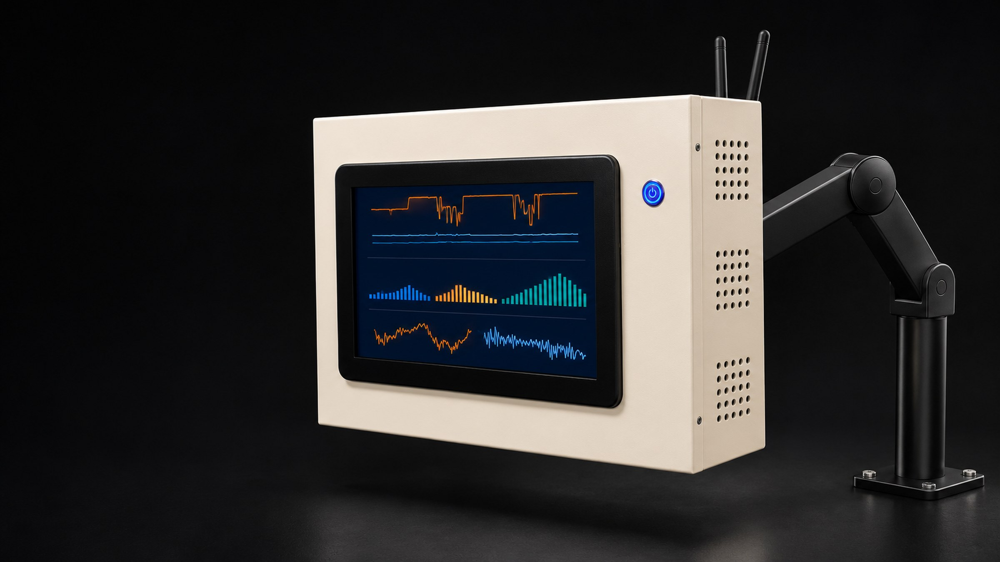
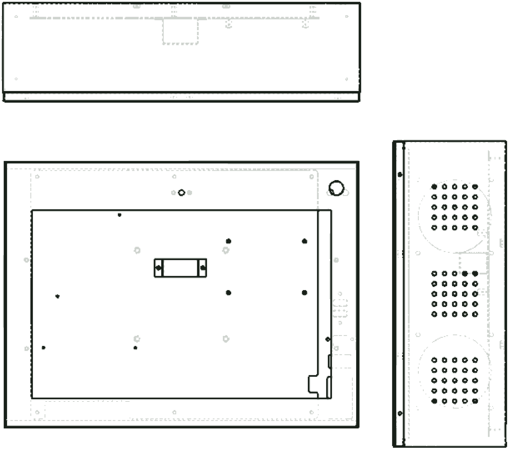
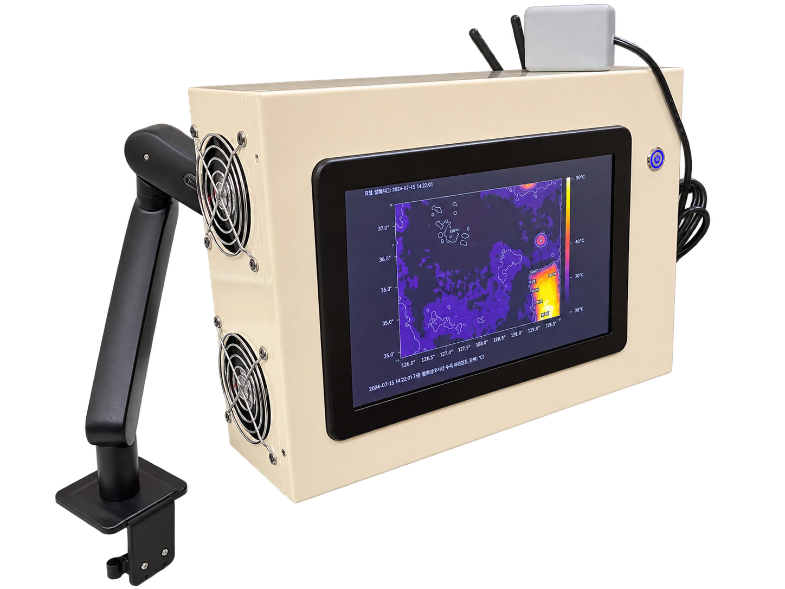
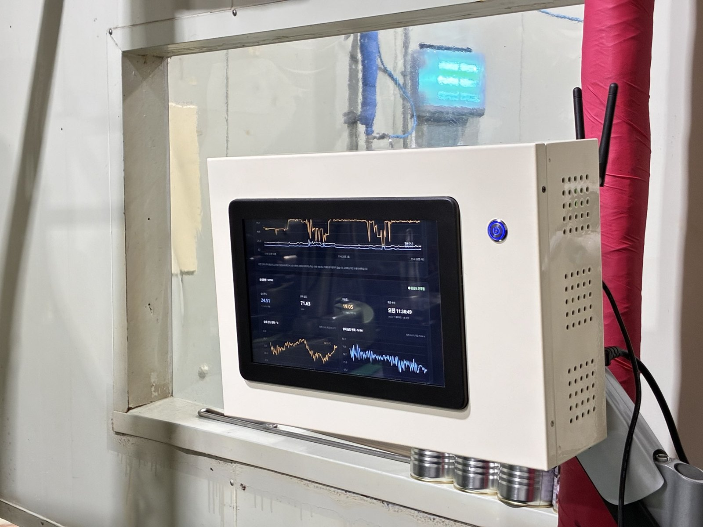
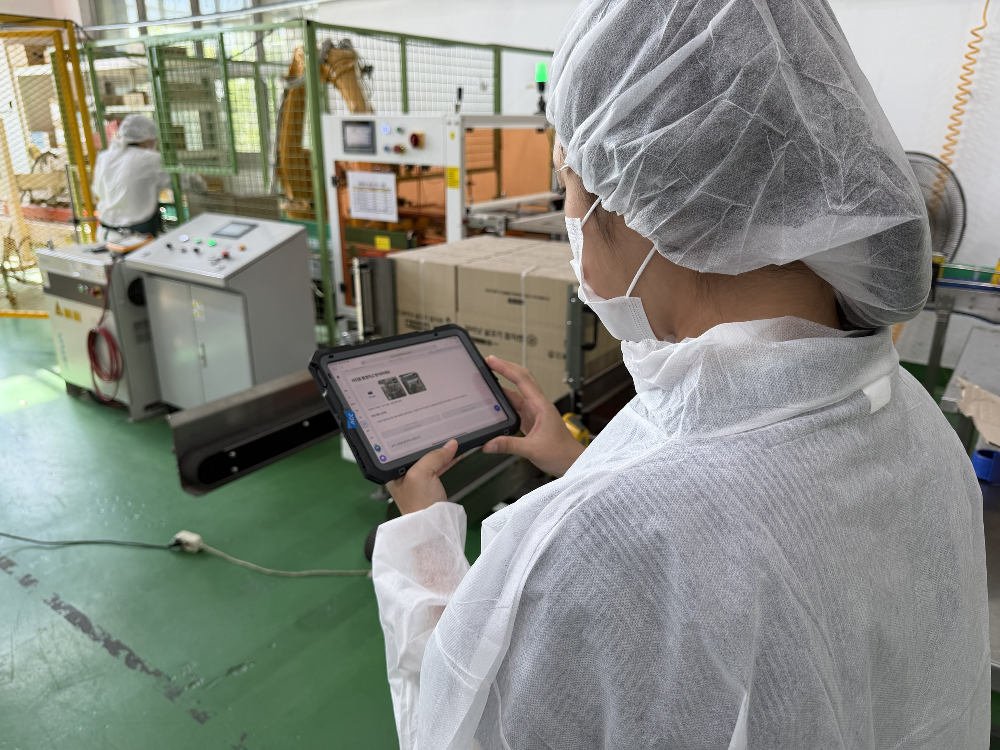

매출액 ('26.1~11.20)
121,073천원 기업 전체 121,072,727원 (공급가)올해 목표 150백만원의 80.7%
SOLUCIONEMOS
충북청년창업사관학교 16기 성공평가 · 2026.12.02
멀티 에이전틱 — ERP·MES 너머 경영 · 공정 에이전틱 센서 관제
공정 로봇 자동화 · PLC 바이브 제어



03 · 고객 문제SOLUCIONEMOS사업 개요
HACCP 점검과 기록을 손으로 처리합니다.
기록 누락이 생기고, 이상이 있어도 대응이 늦어지기 쉽습니다.
공정 데이터 보안과 현장 통신 환경 때문에 외부 클라우드 AI를 쓰기 어렵습니다.
현장 요구 작업자가 설비 곁에서 기준을 확인하고 점검 결과를 기록할 수 있어야 합니다.
04 · 제품·기술SOLUCIONEMOS제품·기술
공장 에이전트가 현장과 만나는 접점으로, 센서와 로컬 AI를 연결합니다.
초기 계획 방수 무선충전·금속검출 케이스, 인증·조달 등록
조정 사유 AI 기술 흐름 변화 · 케이스 구조·금형 검증 기간
통합 개발 현장 단말과 스마트팩토리 SW · 충주 시제품 설치 · YOLO·OCR 위탁개발 완료
협업 솔루시오네모스 기획·통합·실증 총괄 · 채움플러스 함체 설계 협의
05 · 제품 구성 · 시제품SOLUCIONEMOS제품·기술
13형 설계 세 방향과 거치 암 시제품 · 온프레미스 현장 단말

13형 함체 설계 도면(안) · 상면 / 정면 / 우측면


01 가로 화면 창(13형 설계안)
02 전원 단추 위치
03 중앙 거치 브래킷
04 우측면 통풍 타공·방열
350 × 250 × 100 mm 본체 · Jetson Orin + 로컬 LLM · 센서 기록 및 기준 안내
06 · 전체 구조SOLUCIONEMOS제품·기술
멀티 에이전틱 — 협업으로 만드는 자율 진화 공장
생산 · 품질 · 자재 · 경영 에이전트가 계획과 현장 실행을 연결
키오스크 · Jetson Orin · 로컬 LLM · 열화상·영상·온습도 센서
로봇 공정 협약 완료 · 말로 지시해 로봇·PLC 제어로 연결하는 구상
YOLO · OCR 첫 모델 완료 → 현장 결과 데이터로 재학습하는 순환
개념 흐름도 · 실적 또는 성능 수치 아님 · 점선은 추진 예정



07 · 기술 혁신성 · 경쟁력SOLUCIONEMOS제품·기술
| 수행업체 (과업) | 개발 범위 | 계약 기간 | 주요 산출물 | 성능 수치 · 출처 |
|---|---|---|---|---|
| ㈜컨포트랩 YOLO 영상 AI |
작업자·위생복·위생모 착용 검출 모델 및 확인용 화면 | 2026.09.07 ~ 10.16 세금계산서 11.02 |
YOLO11m 가중치·11s 평가 기록, 확인 대시보드, 완료보고서(20쪽) | mAP50 0.9435 (정밀도 0.9217 · 재현율 0.9129) 공개 시험 사진 453장, YOLO11m 2차 (완료보고서 3쪽) |
| 에스시티㈜ OCR 문서 인식 AI |
한글 문서 인식 OCR 모델 학습·평가 및 검토·내보내기 도구 | 2026.09.14 ~ 10.30 세금계산서 11.03 |
OCR 모델 가중치, 소스코드·검토 화면(CSV·JSON), 완료보고서(14쪽) | 문자오류율(CER) 0.0936 → 0.0474 공개 영수증 검증 2,141단어 (완료보고서 2쪽) |
근거: 컨포트랩·에스시티 위탁개발 완료보고서
Jetson Orin 보드에서 센서·영상을 실시간 분석
HACCP 점검 기준을 안내하고 작업자가 결과를 확인·기록
경영·제조·품질 시스템 고객 확보 · ERP·MES 조율은 추진 예정
08 · 웹사이트 · 웹 3D 모의 공정 체험SOLUCIONEMOS제품·기술
제품 소개 · 기술 흐름 · 도입 문의AI Agentic 키오스크 사양(350×250×100mm), 현장 단독 구동 구조, 회사 정보를 안내합니다.
 홈페이지
홈페이지브라우저에서 선택하는 6개 공정 시나리오웹에서 작업 요청부터 승인·설비 실행·결과 반영까지의 순서를 모의 체험합니다.
왼쪽은 제품 안내 공식 홈페이지, 오른쪽은 작업 순서를 설명하는 웹 모의 시뮬레이션입니다.
12 · 전시 부스 · 포럼 시연SOLUCIONEMOS추진 일정·계획
2026년 8월 S-CoP 세미나 · 8/18 대학 강의 · 9월 페스타 부스 · 11/12 AX 전문가 포럼
13 · ERP 시연 및 멀티 에이전트 도구 소개SOLUCIONEMOS추진 일정·계획
왼쪽은 ERP 시연 회의(화면 표시 날짜 기준), 오른쪽은 멀티 에이전트 작업 관리 도구 소개 발표입니다.
15 · 사업화 단계 · 해외 협의 · 졸업 후 계획SOLUCIONEMOS추진 일정·계획
멀티 에이전틱 로봇 공정 협약 완료
인더스트리 4.0 협회 · 아이투비씨(현대로봇 출신)
협약 완료 → 2027년 상시 전시 쇼룸 → 솔루시오네모스·중산비앤에프 대표로서 충북대 연구소기업 설립(2027 상반기) → 멀티 에이전틱 공장 R&D · 지역 AX·DX 사업 예정
추진 방향: 로봇·PLC 바이브 제어 실증 → ERP·MES 너머 경영 → 자율 재학습 (세부 일정 미정)
■ 예정 · 2027년만 확인된 항목은 연도 전체 표시(분기 미정) · R&D·지역 사업 착수일 미정 · 설립은 상반기 예정
| 업무 묶음 | 26.12 | 27 Q1 | 27 Q2 | 27 Q3 | 27 Q4 | 2028 | 2029 |
|---|---|---|---|---|---|---|---|
| 성공평가·성과공유 | |||||||
| 상시 전시 쇼룸 운영 | |||||||
| 로봇·PLC 바이브 제어 실증 | |||||||
| 충북대 연구소기업 설립 | |||||||
| 공장 R&D · 자율 재학습 실증 | |||||||
| AX·DX 확대·지역 사업 | |||||||
| 50백만원 융자 신청 | |||||||
| 연도별 매출·고용 목표 |
| 구분 | 기간 | 주요 내용 | 목표 | 상태 |
|---|---|---|---|---|
| 평가·전시 | 2026.12 | 성공평가 · 성과공유회 | 발표·전시 | 예정 |
| 로봇 공정 | 2027년 | 로봇 공정 실증 · 상시 쇼룸 | 실증·운영 | 예정 |
| 연구소기업 | 2027 상반기 | 충북대 설립 · 대학 공동 프로젝트 | 설립 추진 | 예정 |
| R&D·AX/DX | 2027 / 미정 | 스마트팩토리 AX·DX / 공장 R&D·지역 사업 | 대규모 / 미정 | 예정 |
| 목표·자금 | 2027 / 28 / 29 | 매출 · 고용 목표 / 2027 융자 신청 | 5·15·20억원 / 2·4·6명 · 50백만원 | 계획 |
16 · 맺음SOLUCIONEMOS추진 일정·계획
스마트 팩토리를 넘어 에이전틱 팩토리 · 경영 솔루션
현장 단독 구동 AI Agentic 키오스크 시제품을 제작하고 충주 식품 제조 현장에서 실증했습니다.
인더스트리 4.0 협회·아이투비씨(현대로봇 출신)와 로봇 공정 협약 완료. 솔루시오네모스·중산비앤에프 대표로서 2027년 상반기 충북대 연구소기업 설립 및 상시 쇼룸 운영 예정입니다. ERP·MES 너머 경영, 로봇 자동화·PLC 바이브 제어와 자율 재학습은 추진 예정입니다.
기업 전체 매출 목표의 80.7%, 사업비 집행률 99.96%, 협약기간 특허 신규 출원 2건(누계 출원 4·등록 1)을 달성했습니다.
감사합니다.
공식 홈페이지 QRwww.solucionemos.co.kr